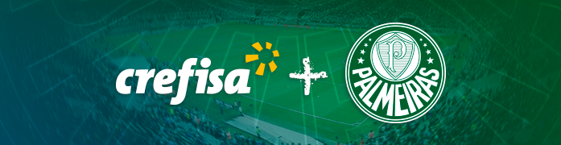
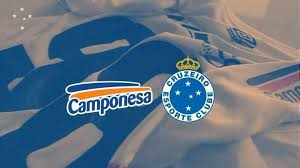
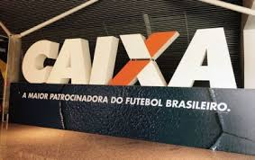

Sociedade Esportiva Palmeiras
É um clube poliesportivo brasileiro sediado em São Paulo que tem como modalidade esportiva principal o futebol, com um dos times mais vencedores e que está entre as equipes com maior torcida do País. As cores do clube, presentes no escudo e bandeira oficial, são o verde e branco.O vermelho, presente desde sua fundação em 1914, foi excluído durante a Segunda Guerra Mundial, por pressão do governo nacional, na mesma reunião que formalizou a mudança de nome de Palestra Itália para Palmeiras.
Cruzeiro Esporte Clube
Fundado em 2 de janeiro de 1921, cores predominantes são azul e branco.Cruzeiro Esporte Clube é uma associação polidesportiva brasileira, com sede em Belo Horizonte, considerado um dos maiores clubes de futebol de Minas Gerais e do Brasil. Fundado em 1921 com o nome de Sociedade Esportiva Palestra Itália, foi rebatizado para seu nome atual em 1942 - em referência ao Cruzeiro do Sul - por imposição do governo federal à época proibiu o uso no país de quaisquer símbolos de Alemanha, Itália e Japão, nações inimigas do Brasil no contexto da Segunda Guerra Mundial. É um dos clubes mais populares do Brasil.Seu maior rival é o Atlético Mineiro, com quem faz um dos maiores clássicos do futebol brasileiro. Em menor grau, há também rivalidade com o América Mineiro.
- Jogadores com mais gols
- Tostão
- Dirceu Lopes
- Niginho
- Bengala
- Ninão
- Marcelo Ramos
- Jogadores S-E-X-Y
- Goleiro Rafael
- Lateral Esquerdo Dodô
- Zagueito Dedé
- Zagueiro Léo
- Zaguero Murilio
- Atacante David
Clube de Regatas Vasco da Gama
Apesar de ter sido fundado como um "Clube de Regatas", consagrando-se no remo como um dos maiores campeões do país, o Vasco da Gama ainda abrange outras modalidades.Club de Regatas Vasco da Gama MHM é uma entidade sócio-poliesportiva brasileira com sede na cidade do Rio de Janeiro, fundada em 21 de agosto de 1898 por um grupo de remadores. Inspirados nas celebrações do quarto centenário da descoberta do caminho marítimo para as Índias, ocorrida em 1498, batizaram a nova agremiação com o nome do herói português que alcançou tal feito, o navegador Vasco da Gama. As cores do Vasco guardam forte significação: o preto remete aos mares desconhecidos do Oriente, desbravados por Vasco da Gama, enquanto o branco da faixa diagonal refere-se à rota descoberta pelo almirante.